超级打工人
第一章 · 系统降临
EXP-756 · V5原创
↓
会议室里，投影仪嗡嗡作响。我站在PPT前，口干舌燥地讲了二十分钟——
（冷静，朱江。这是本月第七次融资路演了。这次一定行。）
"我们的AI客服系统，错误率只有0.3%，比行业平均低了一个数量级——"
（看他们的眼神……不对，他们根本没在看我。）
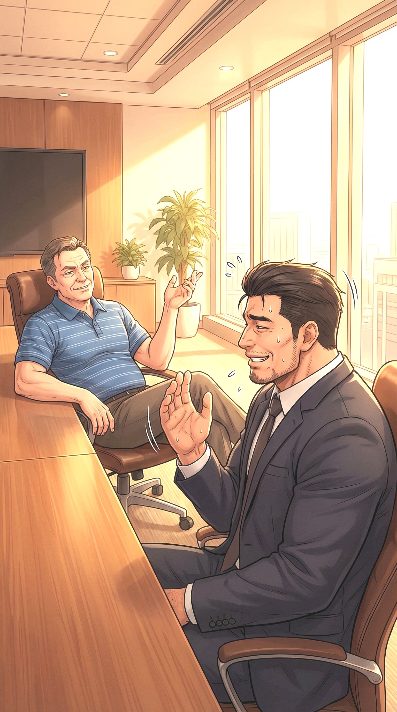
我瞟了一眼对面三位投资人——一个在刷短视频，一个在回微信语音，最右边那位……好像在研究午饭吃什么。
（行吧，我这20分钟的PPT，价值连一顿午饭都比不过。）
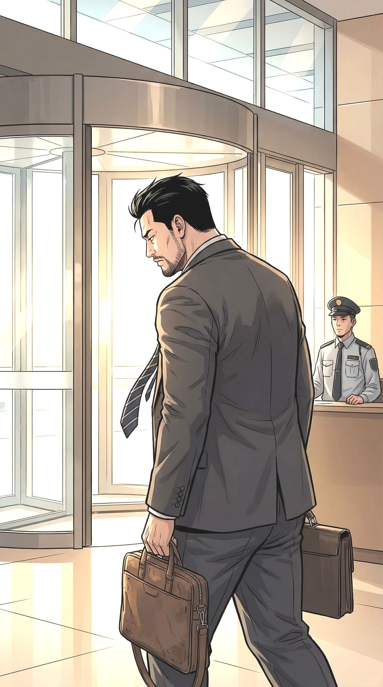
投资人抬头：「你们的DAU多少？」
我：「呃……目前还在冷启动——」
投资人已经低头继续刷手机了。
（得，面试官看简历都比这认真。）
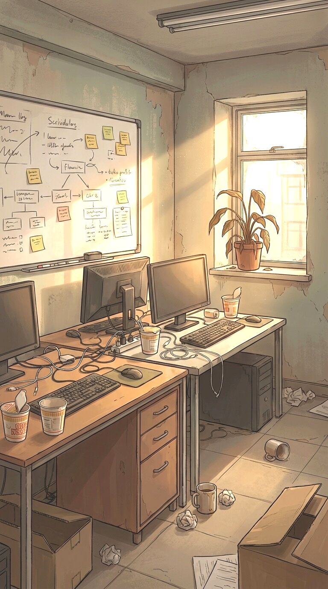
会议室门在身后关上。我靠在走廊墙上，苦笑。
（第七次了。七次啊。如果创业有段位，我现在是青铜选手在钻石局里送人头。）
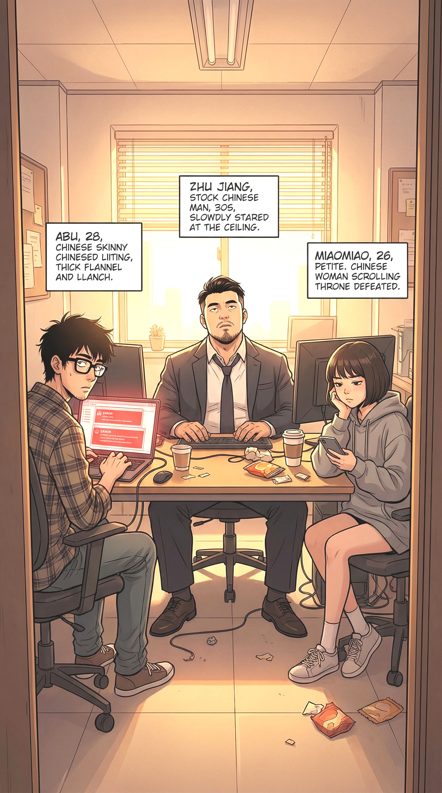
电梯门关上，只剩我一个人。
（公司账上的钱……最多撑三个月。三个月后，阿布和苗苗的工资怎么办？）
电梯的镜子里，一个满脸疲惫的家伙正盯着我看。
（哥们儿你谁啊？哦，是我自己。）
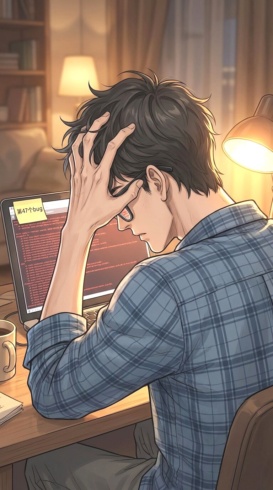
公司——说是公司，其实是城中村一楼的居民房改的。阳台上邻居大妈的碎花床单在风里飘，比我们的公司logo还显眼。
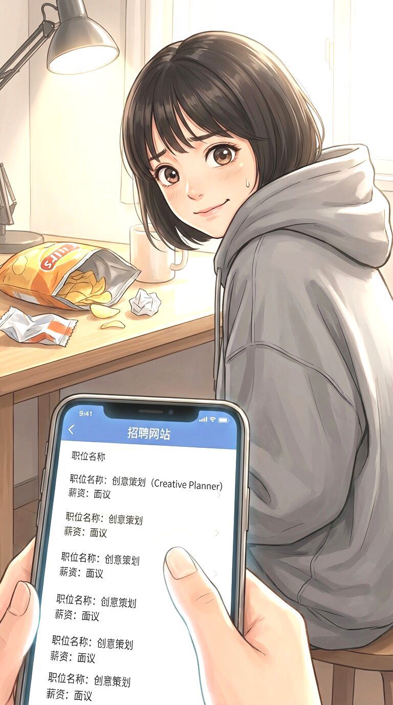
推开门，三张桌子挤在不到二十平的房间里。阿布埋头敲代码，屏幕上满屏红色报错。苗苗……在刷手机。
（整个公司的状态和我的融资进度一样——全线飘红。）
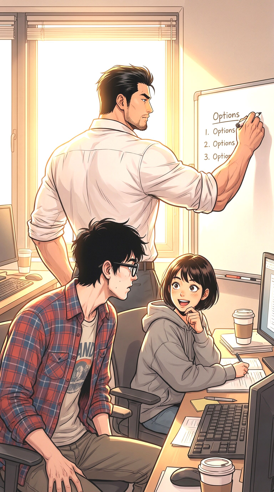
三个人对视了三秒。
苗苗先开口：「又没戏？」
我：「……你猜。」
阿布头都没抬：「不用猜，老板回来没摔门就是好消息。」
阿布。我的CTO，厚黑框眼镜，头发三天没洗，但写出来的代码比我的发型还整齐。
（全公司最靠谱的人。如果公司倒了，最对不起的就是他。）
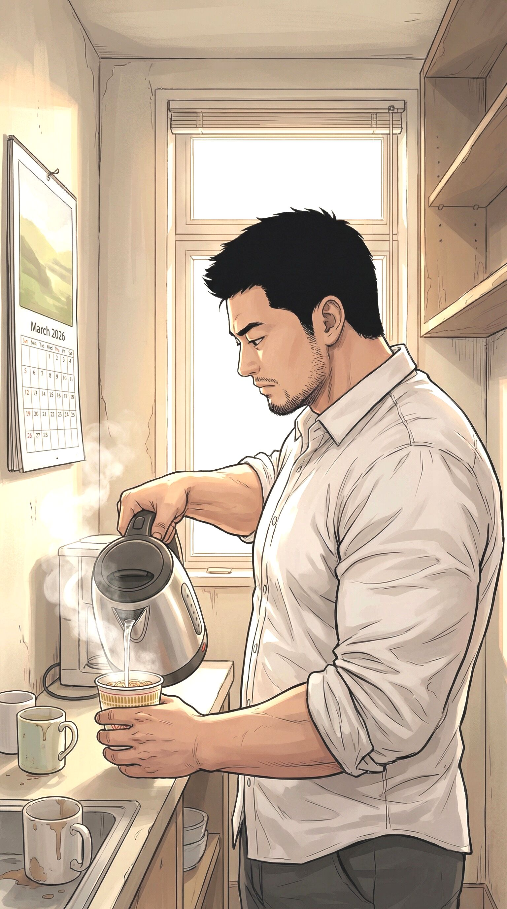
苗苗放下手机，我瞥到屏幕——是招聘APP。
（她已经在看后路了。不怪她，换我也看。）
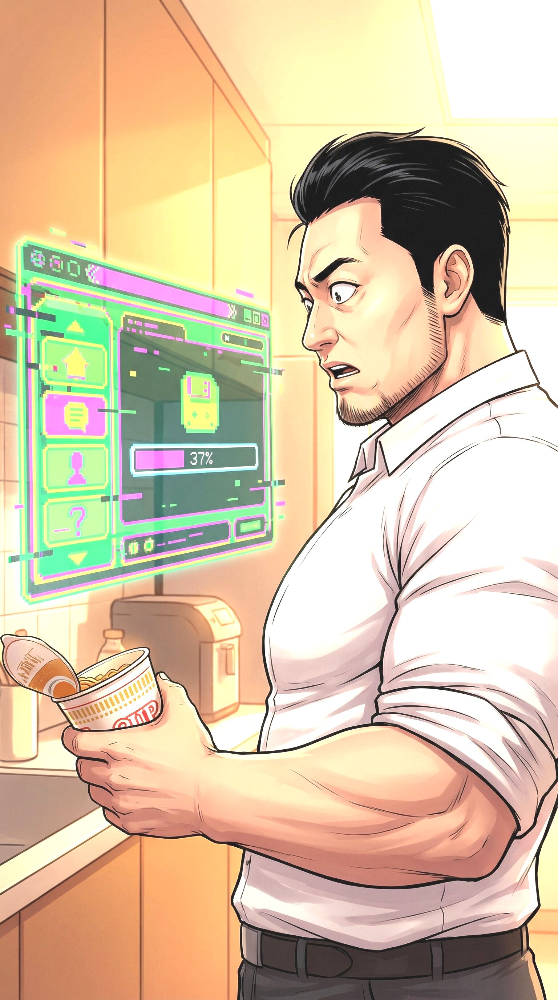
我坐在那把咯吱响的破转椅上，仰头望天花板。裂缝像蜘蛛网一样蔓延，跟我们的现金流一个走向。
⚡ DECISION-1
公司账上只剩三个月。投资人说——砍掉核心AI项目，换一条更"稳"的赛道，他们就投。
"让我砍AI项目去做什么？外卖小程序？那不是创业，那是投降。这项目是阿布熬了多少个通宵写出来的？砍了它，我还有脸叫CEO？"
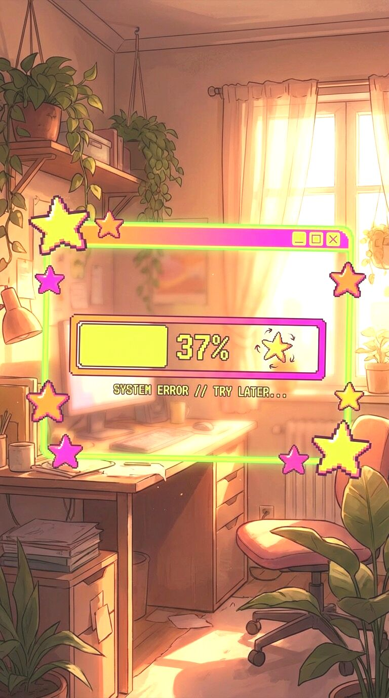
深夜十一点。阿布和苗苗都走了。我站在饮水机旁泡泡面——老坛酸菜味，创业者的标配晚餐。
（如果有一天我成功了，一定要在办公室装一台咖啡机。不，一台拉面机。）
然后——眼前突然出现了一个半透明的界面。
【打工人系统 v0.1 beta】
加载中... ██████░░░░ 37%
（？？？我这是……加班猝死了？）
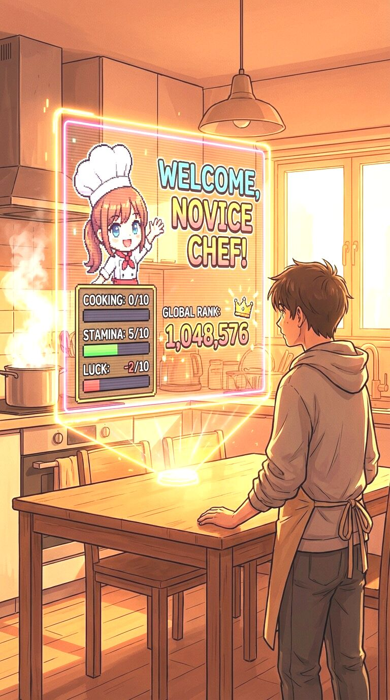
我往后一退——直接踢翻了泡面。酸菜汤汁洒了一地。
（我的晚饭！！！比这个破界面值钱多了！！）
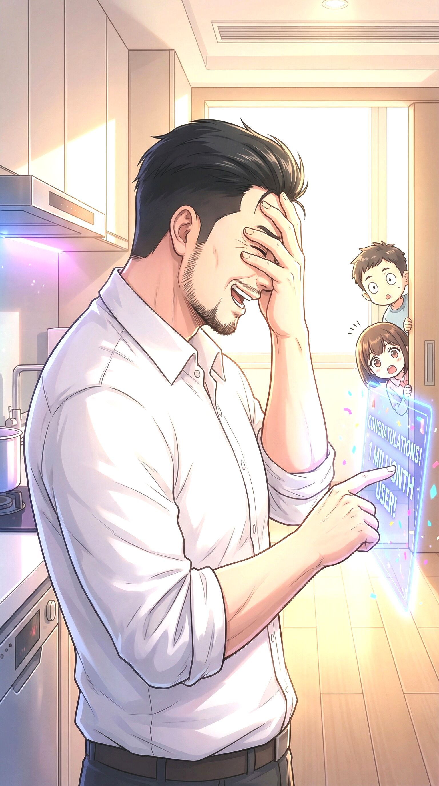
【打工人系统 v0.1 beta】
宿主绑定成功！
界面花里胡哨的，像山寨游戏的充值页面。边框是像素风，图标糊得跟马赛克似的。
（这系统……一看就是外包做的。）
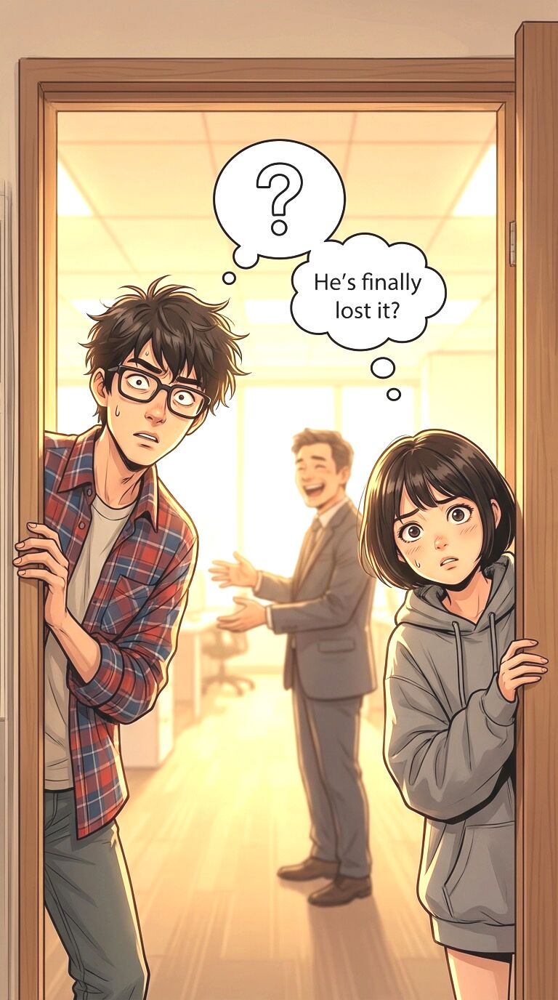
当前等级：临时工
经验值：0/100
称号：[无]
（临时工？！我好歹是CEO！虽然……虽然确实也在打工。给梦想打工。）
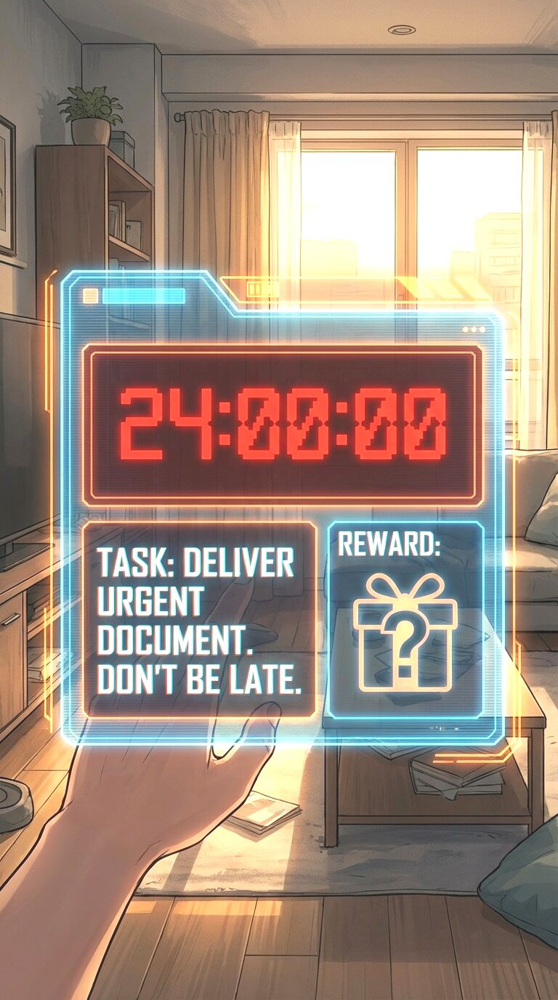
阿布路过拿水：「老板你蹲地上看什么呢？」
我：「没……没什么，看蚂蚁。」
阿布：「……一楼确实蚂蚁多。」
（他看不到！只有我能看到这个系统！）
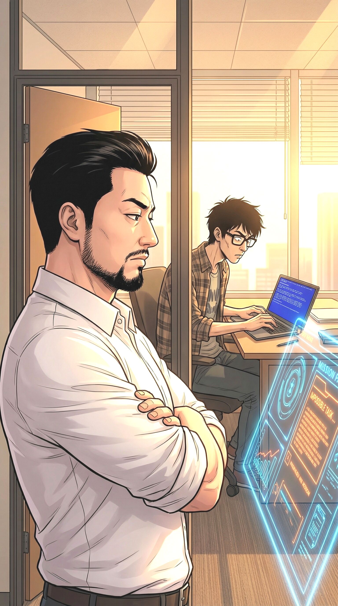
【紧急任务】
24小时内签下1位付费客户
奖励：随机Buff × 1
失败惩罚：等级降为"实习生"
（……实习生？比临时工还低？这系统的等级设计是谁做的，过来挨打。）
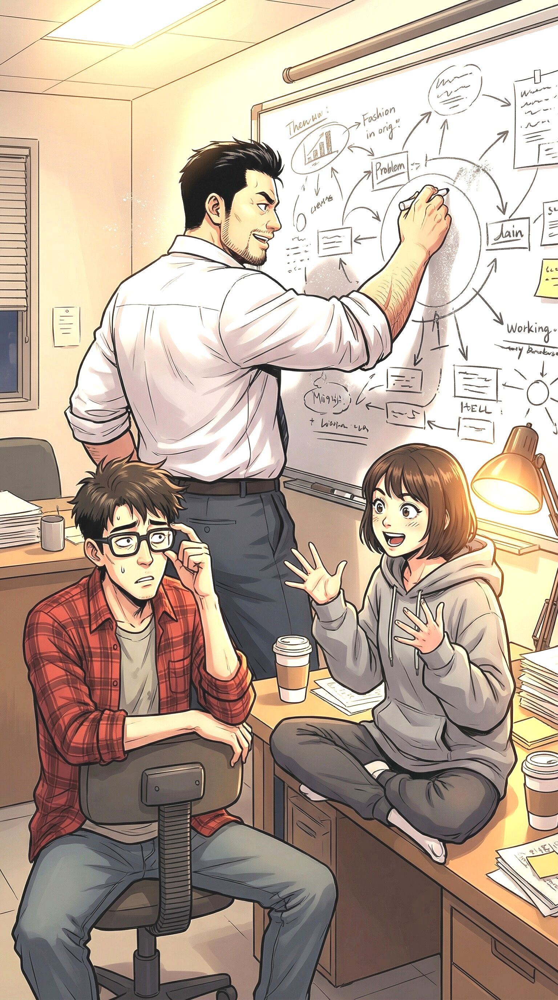
我盯着任务面板，表情从震惊→困惑→苦笑→认命，走完了情绪的五个阶段。
（24小时签客户？我路演了七次都签不到投资人。这跟让社恐去相亲有什么区别？）
（但是……万一这Buff真的有用呢？反正现在也没有更差的情况了。）
第二天。白板上写满了方案，又全被划掉了。
苗苗：「要不我们去扫楼？」 ——划掉
阿布：「能不能在GitHub上发个帖？」 ——划掉
我：「在闲鱼上挂一个'AI帮你回差评'？」 ——划掉，但……等等。
苗苗比划着：「楼下王叔的面馆差评超多！他昨天还跟我抱怨——」
我和阿布同时看向苗苗。
（王叔的面馆……面好吃，但回复差评的水平跟他的脾气一样——暴躁。）
（等等。这不就是我们的完美客户吗？）
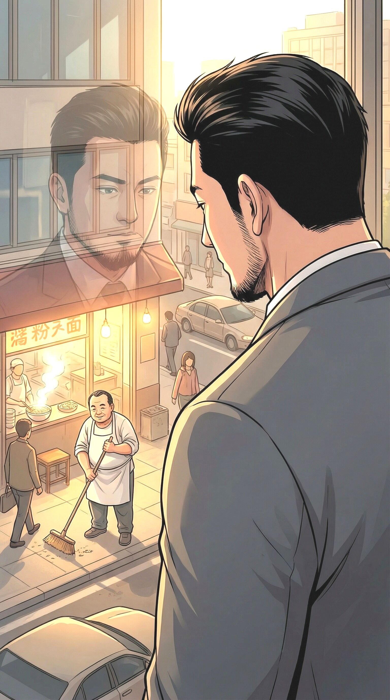
王叔的面馆。门口蒸汽腾腾，招牌上写着"王记手擀面"——那个"擀"字写错了，写成了"赶"。
（先别纠正人家错别字，朱江，你是来谈客户的。）
⚡ DECISION-2
站在面馆门口。怎么开口？直接说"我们是AI公司"，王叔大概率以为是推销诈骗的。
A）直接推销产品功能
B）先吃碗面再找机会
C）从王叔的痛点切入——差评
"不能硬推。王叔是搞餐饮的，他不关心什么AI不AI，他只关心那些一星差评把他气得睡不着觉。从痛点入手，这是做产品的基本功。"
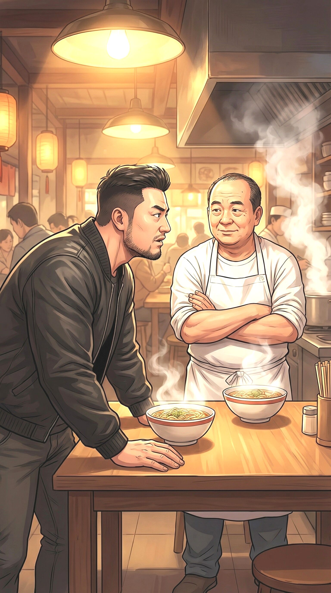
王叔。五十出头，发际线后退得比我的融资进度还快，但一双精明的小眼睛什么都看在眼里。
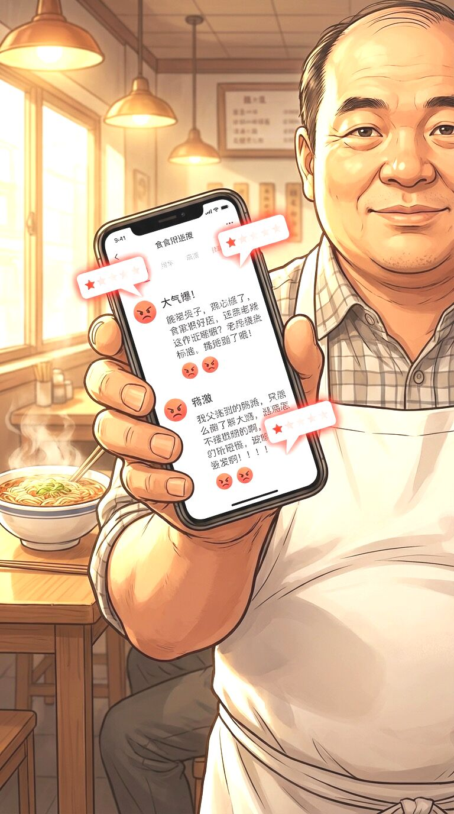
我：「王叔，最近外卖平台那些差评看了吗？」
王叔脸色一变：「别提了！有个人说我的面像泡了三天的方便面！我的手擀面！手——擀——的！」
（触发痛点，成功。）
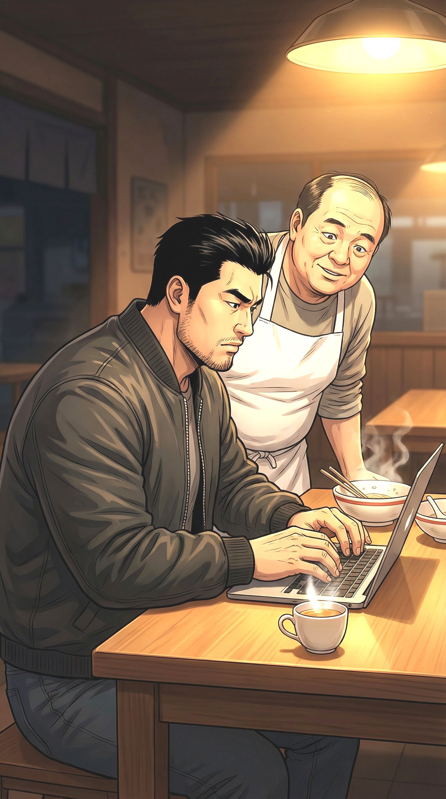
我打开笔记本：「王叔你看，我们做了个工具——把差评输进去，它能自动帮你写回复。」
王叔：「电脑写的？那不是罐头话吗？」
我：「您看看效果——」
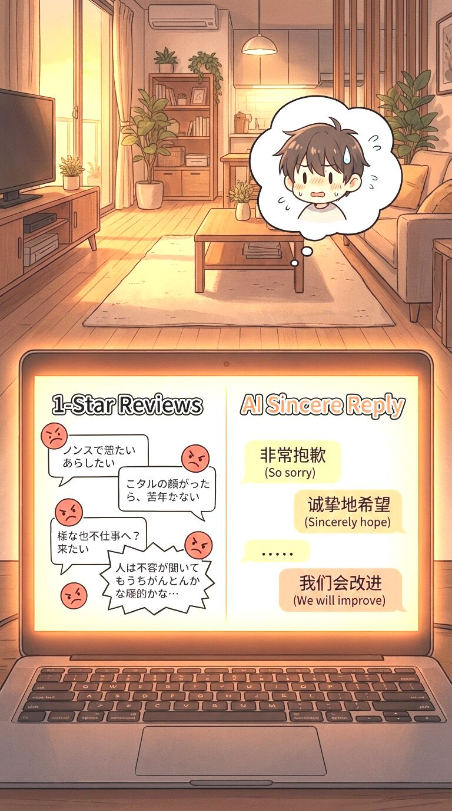
屏幕上，AI针对那条"像方便面"的差评，写了一段回复——
「亲，看到您的评价我们非常心疼。手擀面的口感确实和方便面不同，可能是当天面团醒发时间不够导致口感偏软。下次来店里请出示此评价，我们免费请您尝一碗，让您感受正宗手擀面的劲道！」
（不卑不亢，承认问题，给解决方案，还引流到店。完美。）
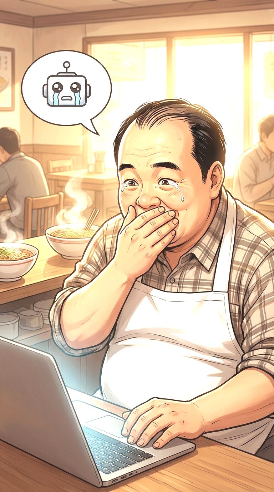
王叔看完，愣了三秒——然后一巴掌拍在桌子上，哈哈大笑。
王叔：「这写得比我闺女作文还好！！」
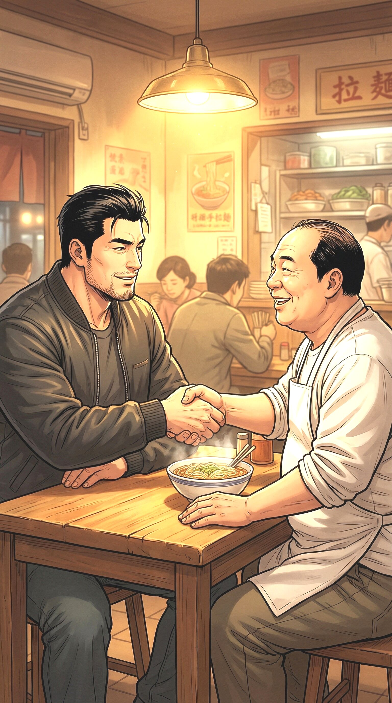
王叔竖起大拇指。
王叔：「多少钱一个月？」
我：「99。」
王叔：「成交。比请个小工便宜多了。」
（99块。公司的第一个付费客户。我鼻子有点酸。）
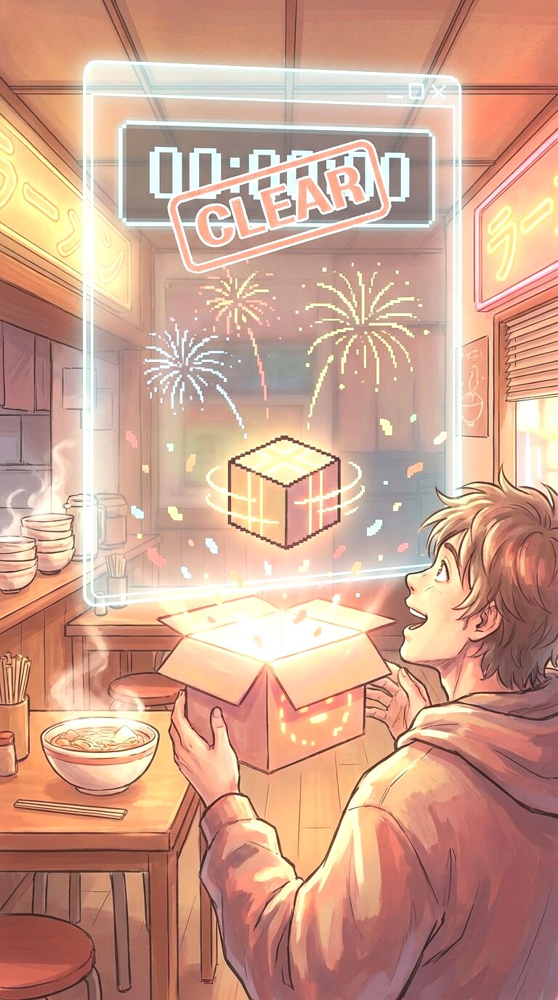
【叮！任务完成！】
获得经验值 +50
正在抽取随机Buff……
界面上金光闪闪，但特效卡顿得像PPT翻页。
（这系统的渲染性能，跟我们公司的服务器一个水平。）
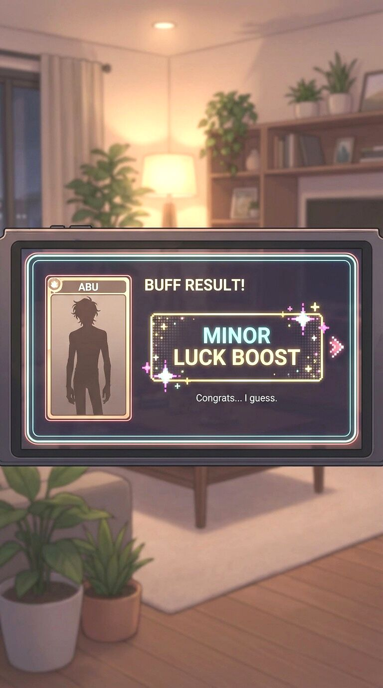
【获得Buff：社交恐惧消除 × 1】
持续时间：24小时
效果：消除目标对象的社交恐惧
（等等……消除的不是我的社交恐惧，是别人的？这什么奇葩Buff？）
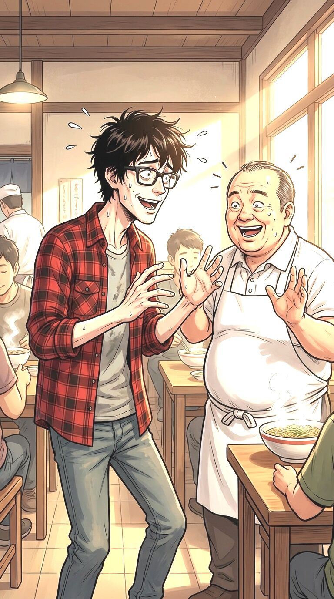
回到办公室。阿布突然站起来——
阿布：「苗苗！我跟你说！这个递归算法太优雅了你看——」
苗苗和我同时惊呆。阿布这个人，平时说话不超过十个字。
（Buff……生效了？！）
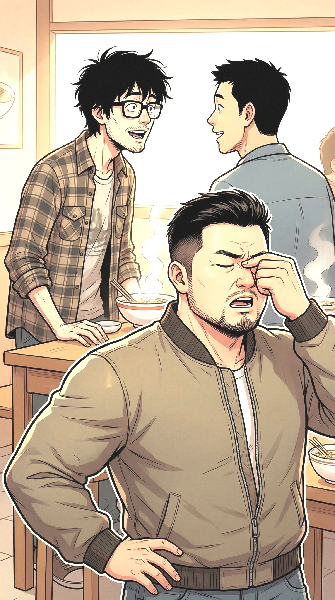
⚠️ 警告
检测到同区域其他宿主
距离：约200米
建议：保持警惕
（……其他宿主？意思是——拿到这个系统的，不止我一个？）
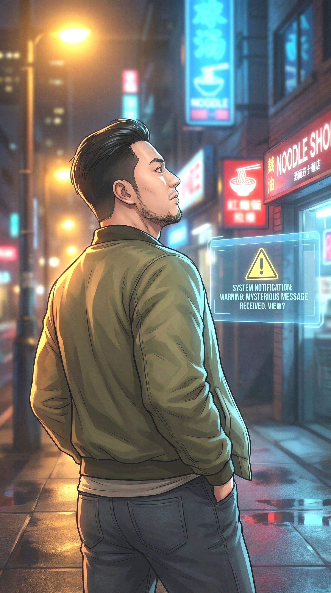
我走到窗边，望向对面那栋写字楼。二十三层，有一扇窗户透出诡异的蓝光——不是普通的电脑屏幕光。
（那个人……也在看系统界面？）
（他是谁？他的任务是什么？如果我们的任务冲突了——）
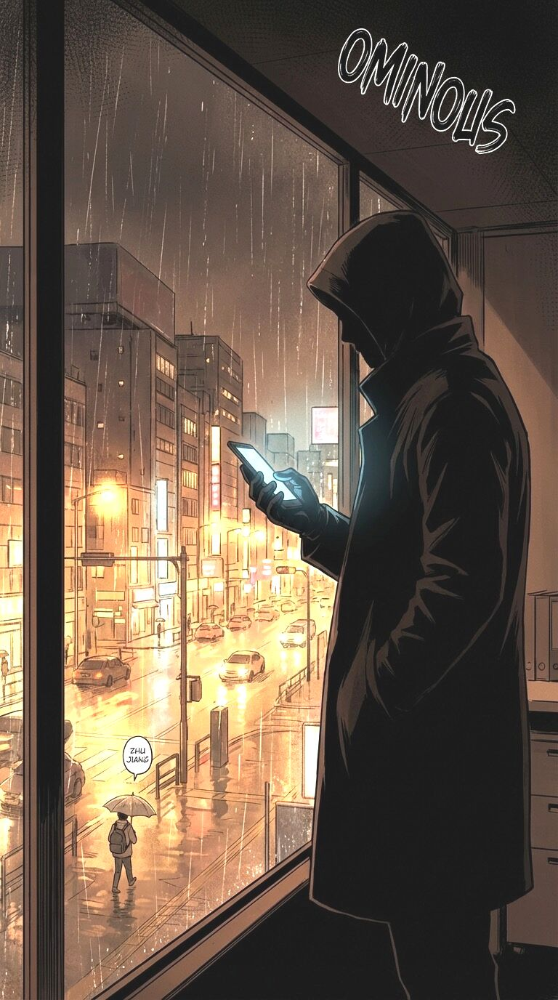
蓝光忽然灭了。像是有人察觉到了我的目光。
系统右下角弹出一条新消息——
「新任务已解锁：与对手宿主的第一次交锋。」
⛔ 倒计时：48:00:00
— 第一章 · 完 —
第二章 · 对手
即将更新